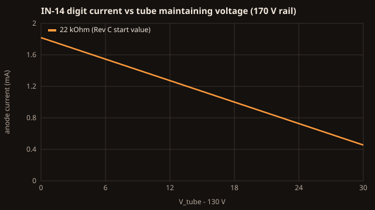
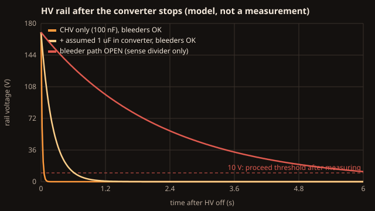

Equations
Each section goes intuition → equation → symbols and units → worked example → picture and test. Every number on this page is recomputed by tests/check_equations.py (38 checks). They are model numbers, not measurements: Stage 4 of the build guide replaces them with readings from your board.
Inputs used throughout:
| Symbol | Value | Source |
|---|---|---|
| V_HV | 170 V | NCH8200HV v2.1 data sheet: fixed nominal output |
| V_tube | 145 V typical, 135–155 V assumed spread | Tube-Tester IN-14 page (typical maintaining voltage) |
| I_typ | 2.5 mA per digit | Tube-Tester IN-14 page (typical cathode current) |
| R_anode | 22 kΩ, 1 W | Rev C start value (RA1–RA6) |
| R_lamp | 220 kΩ, 1 W | RL1, RL2 |
| V_NE2 | 60 V assumed | NE-2 maintaining voltage; verify |
1. Tube anode current
Intuition. A glowing Nixie tube holds its own voltage roughly constant (the maintaining voltage). Whatever is left of the supply is dropped across the anode resistor, and that sets the current.
Equation. I_anode ≈ (V_HV − V_tube) / R_anode
Symbols. I_anode in amperes (A); V_HV and V_tube in volts (V); R_anode in ohms (Ω).
Worked example. (170 V − 145 V) / 22 000 Ω = 1.14 mA. Across the assumed spread: 1.59 mA at 135 V, 0.68 mA at 155 V.
What it means. 1.14 mA is about 45 % of the 2.5 mA typical IN-14 current. Expect the start value to run the tubes gently; a digit that glows only partly is a sign of too little current. The 22 kΩ value is a starting point, not a verified brightness. Measure the current on every digit (Stage 4) before you change anything. For reference, 2.5 mA at 145 V would need about 10 kΩ, and a lower resistor raises the fault power in section 2.

Test. anode current @ V_tube=... and 22 k start value vs IN-14 typical in tests/check_equations.py.
2. Resistor power: why the anode resistors are 1 W
Intuition. In normal running the resistor only sees the leftover 25 V or so, so it barely warms. In a fault (a tube or cathode path shorted) it can see the whole rail.
Equation. P = I² × R in normal running; P = V_HV² / R if the full rail appears across it.
Symbols. P in watts (W); I in A; R in Ω; V in V.
Worked example.
| Case | Calculation | Result | Share of 1 W rating |
|---|---|---|---|
| Normal, worst tube (135 V) | (1.59 mA)² × 22 kΩ | 55.7 mW | 5.6 % |
| Fault: full rail across RA | 170² / 22 000 | 1.31 W | 131 % |
| Lamp resistor, normal | (0.5 mA)² × 220 kΩ | 55 mW | 5.5 % |
| Lamp resistor, fault | 170² / 220 000 | 131 mW | 13 % |
What it means. Normal dissipation is tiny. The 1 W rating is there for voltage stress and fault margin, and it is still not enough for a sustained hard short, because the NCH8200HV data sheet describes no current limit (up to 30 mA peak output). This is recorded as an open item in VALIDATION.md, not hidden. Never reduce the rating.
3. Bleeder discharge
Intuition. When the converter stops, its output capacitors are still charged. The bleeder resistors drain that charge. The tubes go dark long before the rail is safe, because a tube stops glowing at about 140 V.
Equation. V(t) = V_HV × e^(−t/τ), with τ = R × C, so the time to fall to a voltage V is t = τ × ln(V_HV / V).
Symbols. τ (tau), the time constant, in seconds (s); R in Ω (the bleeder in parallel with the sense divider); C in farads (F).
Worked example. R = 220 kΩ ∥ 2.022 MΩ = 198.4 kΩ.
| Capacitance on the rail | τ | Time to 10 V |
|---|---|---|
| CHV only (100 nF) | 19.8 ms | 56 ms |
| CHV + an assumed 1 µF inside the converter | 218 ms | 0.62 s |
| Same, but the bleeder path open (RH1 and RH2 are in series, so one open resistor is enough) | 2.2 s | 6.3 s |
What it means. On paper the rail empties in under a second. But the converter's internal capacitance is not in its data sheet, and a single open resistor makes it ten times slower. That is why SAFETY.md asks you to wait 60 seconds and measure below 10 V every time.

Test. The tau ... and time to 10 V ... checks. The firmware also warns if its own sense reading is above 10 V three seconds after HV off; that is a hint, not a proof.
4. HV and VIN sensing
Equation. V_A0 = V_HV × R_S3 / (R_S1 + R_S2 + R_S3); V_A1 = V_IN × R_V2 / (R_V1 + R_V2)
Worked example. 170 V × 22 k / 2.022 M = 1.85 V, about 378 counts on the Nano's 10-bit analog-to-digital converter (ADC) with a 5 V reference, or 0.45 V of HV per count. 12 V × 10 k / 57 k = 2.1 V on A1. Full scale is 459 V for HV and 28.5 V for VIN. If RS3 ever opens, about 82 µA flows into the A0 protection diodes through 2 MΩ, which the pin tolerates.
What it means. The firmware window is 150–190 V. The reference is the Nano's 5 V rail, which can be a few percent off, so compare the firmware's HV sense with your meter at Stage 3 and note the difference in VALIDATION.md.
5. 12 V input current
Equation. I_in ≈ P_HV / (η × 12 V) + I_logic, with P_HV = V_HV × (6 × I_anode + 2 × I_lamp + I_bleed + I_sense)
Worked example. Worst-case tubes: P_HV ≈ 1.94 W; at η (efficiency) = 86 % and about 50 mA of logic load, I_in ≈ 0.24 A. The HV load (10.6 mA) is about 35 % of the converter's 30 mA peak rating.
Test. 12 V input current ... and NCH8200HV headroom .... A reading well above 0.35 A is a stop condition.
6. Real-time clock drift
Intuition. The DS3231 is a temperature-compensated crystal clock, so it drifts far less than an ordinary watch crystal, but not zero.
Equation. drift per day = accuracy (ppm) × 10⁻⁶ × 86 400 s
Worked example. At the data sheet's ±2 parts per million (ppm) from 0 to 40 °C: ±0.17 s per day, ±63 s per year at worst. Real parts are usually better. The DS3231 also has an aging register for trimming, which Rev C firmware leaves at zero.
Test. DS3231 worst drift .... To measure your clock, set it against a reference, then compare after a week with STATUS over the serial port.
7. Sealed-case temperature
Intuition. The alarm-clock case has no vents (so the HV stays enclosed). All the power the clock uses ends up as heat inside and has to leave through the case surface.
Equation. ΔT ≈ P / (h × A)
Symbols. ΔT, the average rise of the inside air over the room, in kelvin (K); P, heat released inside, in W; h, the combined natural-convection and radiation coefficient of the outer surface, in W/(m²·K); A, the outer surface area, in m².
Worked example. P ≈ 1.94 W / 0.86 (converter) + 7 V × 50 mA (the Nano's regulator) + 0.1 W (logic) ≈ 2.7 W. A ≈ 2 × (0.234 × 0.112 + 0.080 × 0.112 + 0.234 × 0.080) ≈ 0.108 m². With h = 5 (pessimistic) ΔT ≈ 5 K; with h = 10 (typical) ΔT ≈ 2.5 K.
What it means. On average the inside barely warms. Hot spots are another matter: the Nano's linear regulator and the HV module run hotter than the air around them. Stage 5 of the build guide measures them after two hours closed.
Test. heat dissipated inside the case, average internal rise ....